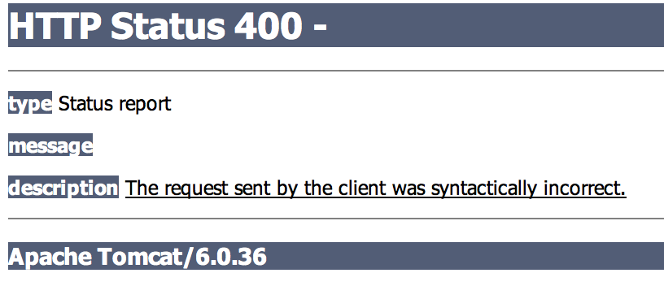
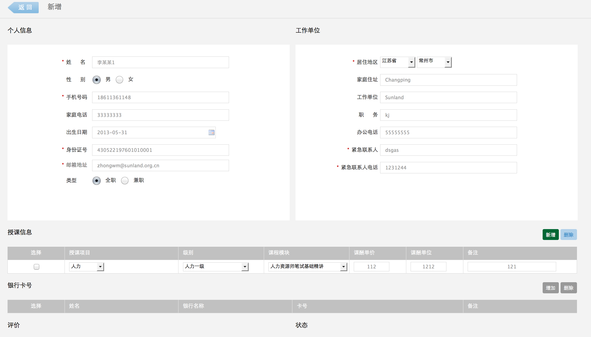
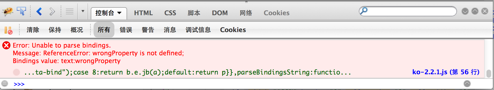
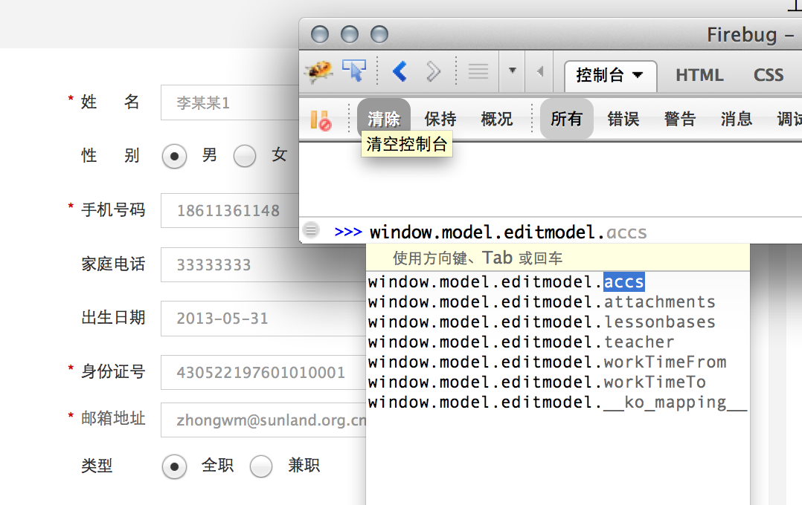

Knockout js 在 springMVC中的应用
钟文明
PAINS
@RequestMapping
public String list(
@ModelAttribute PageResult page,
@RequestParam Long menuId,
@RequestParam(required=false) Long categoryId,
@RequestParam(required=false) Long levelId,
@RequestParam(required=false) Long campusId,
@RequestParam(required=false) Integer classTimeType,
@RequestParam(required=false) Integer status,
@RequestParam(required=false) String classNu,
@RequestParam(required=false) String openDateFrom,
@RequestParam(required=false) String openDateTo,
ModelMap model,
HttpServletRequest request
) {
...
}
带子表的数据提交
MVVM模式的界面编程
- MVC的变体
- M(数据模型) - V(视图) - VM(视图模型)
- VM: View Model
- Knockout js
SpringMVC
良好的json支持
@RequestMapping(value="/{id}",method = RequestMethod.GET)
@ResponseBody
public ClassnuBean get(@PathVariable Long id) throws Exception {
if (id > 0)
return classnuService.getClassnuBeanById(id);
else
return new ClassnuBean(true);
}
输出
{"periods":[{"id":12,"classnuId":2,"timeElapse":null,"hourFrom":"07","minuteFrom":"00","hourTo":"08","minuteTo":"00"},{"id":13,"classnuId":2,"timeElapse":null,"hourFrom":"07","minuteFrom":"00","hourTo":"10","minuteTo":"00"}],"classnu":{"id":2,"status":0,"progress":"0%","campusId":60,"classNu":"804-8004","categoryId":804,"levelId":8004,"moduleId":null,"placeId":null,"companyId":1,"teacherId":2,"classroomId":null,"memo":"df ds","teachTimeType":1,"examTypeId":null,"assistantId":4,"capacity":0,"flotation":null,"openDate":"2013-06-19","closeDate":"2013-06-27","opId":null,"masterName":"刘某","totalTime":8.00,"lessonTimes":2}}
输入
@RequestMapping(value="/save", method=RequestMethod.POST)
@ResponseBody
public String save(@RequestBody ClassnuBean bean, HttpSession session) throws Exception {
TsysUsers user = (TsysUsers) session.getAttribute("loginUser");
bean.getClassnu().setCompanyId(user.getCompanyId());
classnuService.save(bean, user);
return "ok";
}
AGENDA
- 使用knockoutJS之前后对比
- KnockoutJS的特性
- 应用实例
使用Knockoutjs前后的比较
界面
数据模型

使用KO前的 JSP输出
<c:forEach var="acc" items="${accs}" varStatus="status">
<tr class="td_link" id="acc-row-${status.index}">
<input type="hidden" name="accs__${status.index}.id" value="${acc.id}"/>
<td class="link"><input type="checkbox" id="acc-tr-${status.index}" class="row-ckb"/></td>
<td class="link">
<input type="text" name="accs__${status.index}.accName" value="${acc.accName}">
</td>
<td class="link">
<input name="accs__${status.index}.bankBranch" type="text" value="${acc.bankBranch}"/>
</td>
<td class="link">
<input name="accs__${status.index}.accNo" type="text" value="${acc.accNo}"/>
</td>
<td class="border_right">
<input name="accs__${status.index}.memo" type="text" value="${acc.memo}"/>
</td>
</tr>
</c:forEach>
使用KO前的javascript代码
teacher.addAccRow = function() {
$('#acc-table-body').append(
'<tr class="td_link" id="acc-row-' + accs_idx + '">'
+'<input type="hidden" name="accs__' + accs_idx + '.id" value=""/>'
+'<td class="link"><input type="checkbox" id="acc-tr-' + accs_idx + '" class="row-ckb" style="width:15px;height:15px;" /></td>'
+'<td class="link" style="padding-left:10px;text-align:left">'
+'<input type="text" name="accs__' + accs_idx + '.accName" value="" style="border:1px #ccc solid;width:80px;height:20px;">'
+'</td>'
+'<td class="link" style="padding-left:10px;text-align:left">'
+'<input name="accs__' + accs_idx + '.bankBranch" type="text" value="" style="height:20px;width:200px;border:1px #ccc solid;"/>'
+'</td>'
+'<td class="link" style="padding-left:10px;text-align:left">'
+'<input name="accs__' + accs_idx + '.accNo" type="text" value="" style="height:20px;width:200px;border:1px #ccc solid;"/>'
+'</td>'
+'<td class="border_right" style="padding-left:10px;text-align:left"><input name="accs__' + accs_idx++ + '.memo" type="text" value="" style="height:20px;width:200px;border:1px #ccc solid;"/></td>'
+'</tr>'
);
};
还有
- 删除
- 维护编号
对比
使用knockout后
html代码 绑定
<tbody id="acc-table-body" data-bind="foreach:accs">
<tr class="td_link">
<td class="link">
<input type="checkbox" class="acc-row-ckb"/>
<button data-bind="click:$root.delAcc" style="display:none">删除</button>
</td>
<td class="link">
<input type="text" data-bind="value:accName">
</td>
<td class="link">
<input type="text" data-bind="value:bankBranch"/>
</td>
<td class="link">
<input type="text" data-bind="value:accNo"/>
</td>
<td class="border_right"><input type="text" data-bind="value:memo"/></td>
</tr>
</tbody>
使用后javascript代码
model.addAcc = function() {
model.editmodel.accs.push(ko.mapping.fromJS({
"accName": null,
"accNo": null,
"bankBranch": null,
"id": null,
"memo": null,
"teacherId": null
}));
};
model.delAcc = function() {
if (confirm('确定删除?!')) {
return model.editmodel.accs.remove(this);
}
};
调试支持
调试支持

KnockoutJS的特性
- 声明式数据绑定
- 数据监听/刷新
- 依赖跟踪
- 浏览器端模板
声明式数据绑定

绑定支持
-
输出
- value, text ...
- options, attr, css, style ...
- click, checked, disable ...
-
流程控制
- foreach
- if
- ifnot
- with
数据监听/刷新
First name:
Last name:
First name:
Last name:
var AppViewModel = {
firstName : ko.observable("Bert"),
lastName : "Bertington"
}
ko.applyBindings(AppViewModel);
依赖跟踪
fullName = ko.computed(function() {
model.firstName() + " " + model.lastName();
}
浏览器端模板